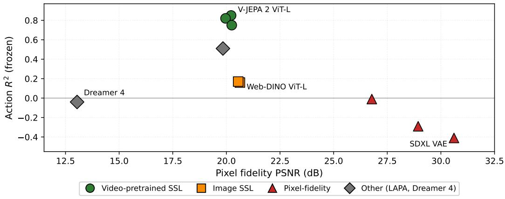
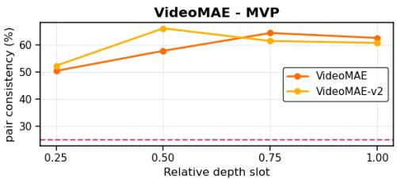
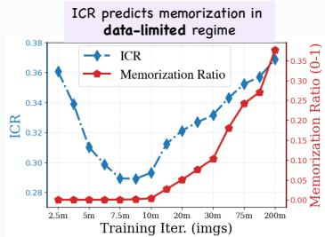
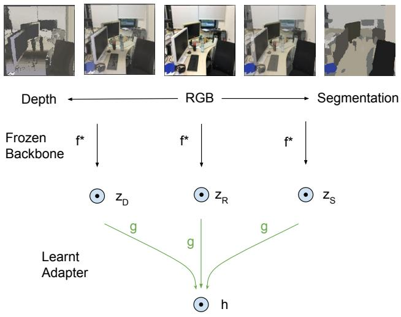
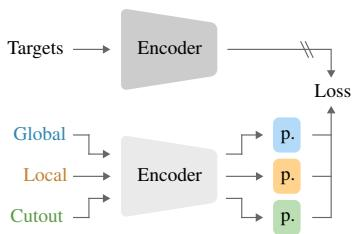
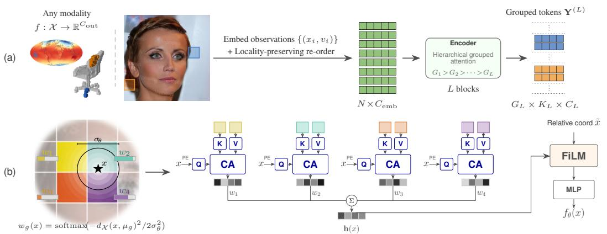
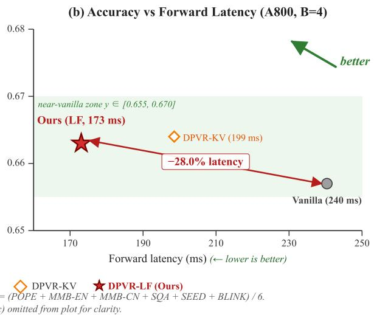
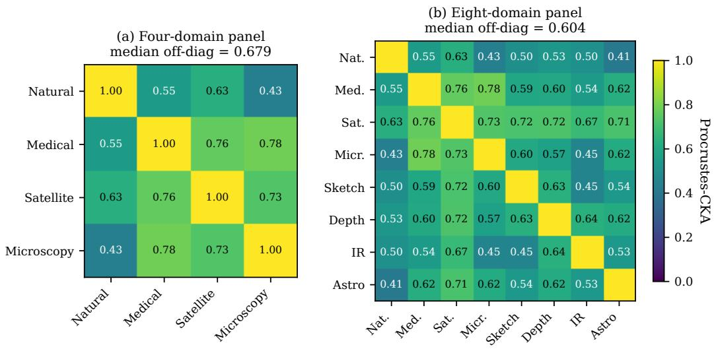
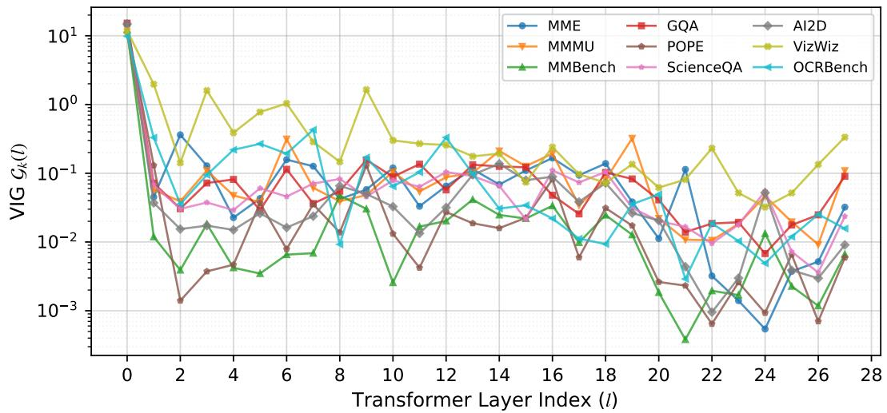

6 月 9 日：What Makes Video World Model 等视觉表征论文归档
本页按日期归档近期论文，保留优先级、主题、来源与方法线索，方便回看同一批工作的研究脉络。
先读 What Makes Video World Model。直接比较 image-only SSL、VideoMAE/V-JEPA、autoencoder、diffusion 等预训练信号，回答哪些 latent 真正携带 action-relevant 视频结构。 其余论文按 P1/P2 与主题顺序扫读，重点看方法图、消融设置和是否能迁移到通用视觉表征。
论文索引

What Makes Video World Model Latents Action-Relevant: Prediction over Reconstruction
高相关；详见方法、贡献和实验边界。
方法：直接比较 image-only SSL、VideoMAE/V-JEPA、autoencoder、diffusion 等预训练信号，回答哪些 latent 真正携带 action-relevant 视频结构

Do Video Foundation Models Understand Intuitive Physics? A Layerwise Probing Analysis
高相关；详见方法、贡献和实验边界。
方法：冻结 V-JEPA、VideoMAE、video diffusion 等模型逐层 probing 物理常识，适合判断视频 SSL 表征是否学到动态规律

Evaluating the Representation Space of Diffusion Models via Self-Supervised Principles
高相关；详见方法、贡献和实验边界。
方法：用 SSL 的 invariant/residual 分解来评估 diffusion feature，是连接生成模型与视觉自监督表示几何的高价值诊断

A Mixed Diet Makes DINO An Omnivorous Vision Encoder
高相关；详见方法、贡献和实验边界。
方法：用 DINOv2 teacher distillation 与跨 RGB/depth/segmentation 对齐，把单一视觉 encoder 推向 modality-agnostic feature space

Self-Supervised Learning with a Multi-Task Latent Space Objective
高相关；详见方法、贡献和实验边界。
方法：直接针对 BYOL/SimSiam/MoCo v3 的 multi-crop instability，把不同空间变换视为不同 latent alignment task

Neural Field Tokenizations with Hierarchy and Spatial Locality Priors
中高相关；详见方法、贡献和实验边界。
方法：把连续信号 neural fields 变成层次化 token 表征，对图像、视频、3D/implicit representation 的统一 tokenization 有启发

Vision-Language Asymmetry in Bistable Image Captioning
中高相关；详见方法、贡献和实验边界。
方法：在 LLaVA 消费的 CLIP 层训练 TopK SAE，分析 ambiguous image captioning 中 vision tower 与 language head 的不对称

Late-Layer Fusion is Enough: Dual-Path Vision Token Routing for Multimodal Large Language Models under Visual Saturation
中高相关；详见方法、贡献和实验边界。
方法：指出 vision tokens 在 MLLM 中层后趋于饱和，提供视觉 token 深层路由/迟融合的表征接口诊断

The Cross-Architecture Substrate: A Domain-Transcendent, Calibration-Surviving Geometric Invariant of Modern Vision Encoders
中相关；详见方法、贡献和实验边界。
方法：声称不同训练范式的 vision encoders 收敛到共享低维几何子空间，若成立，对表征相似性和迁移评估很有参考

Look Less, Reason More: Block-wise Attention Skipping for Efficient Multimodal LLMs
中相关；详见方法、贡献和实验边界。
方法：同样围绕 visual attention saturation，但更偏 training-free inference efficiency；适合和 DPVR-LF 对照扫读